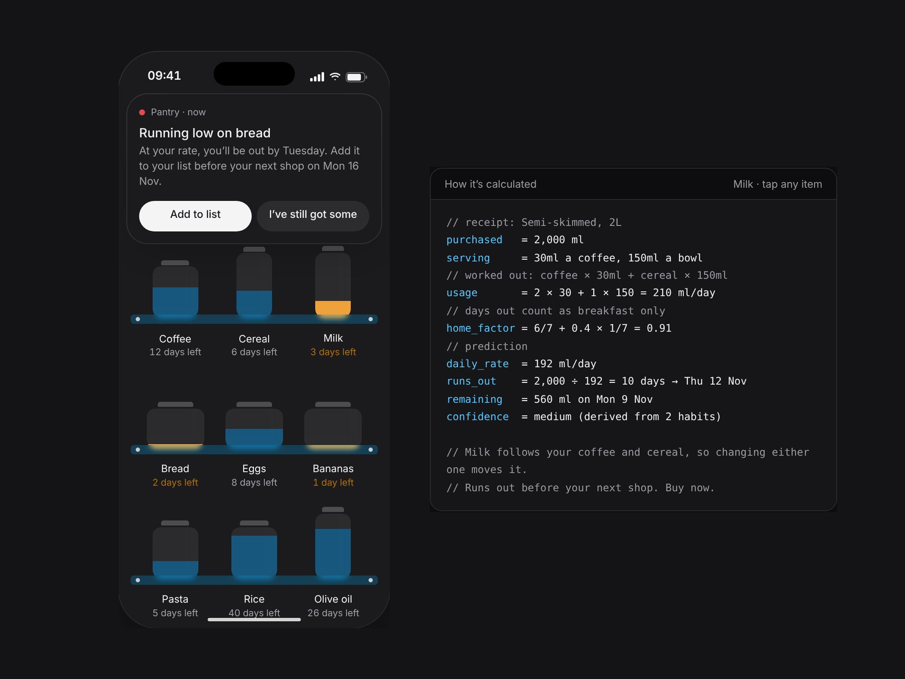
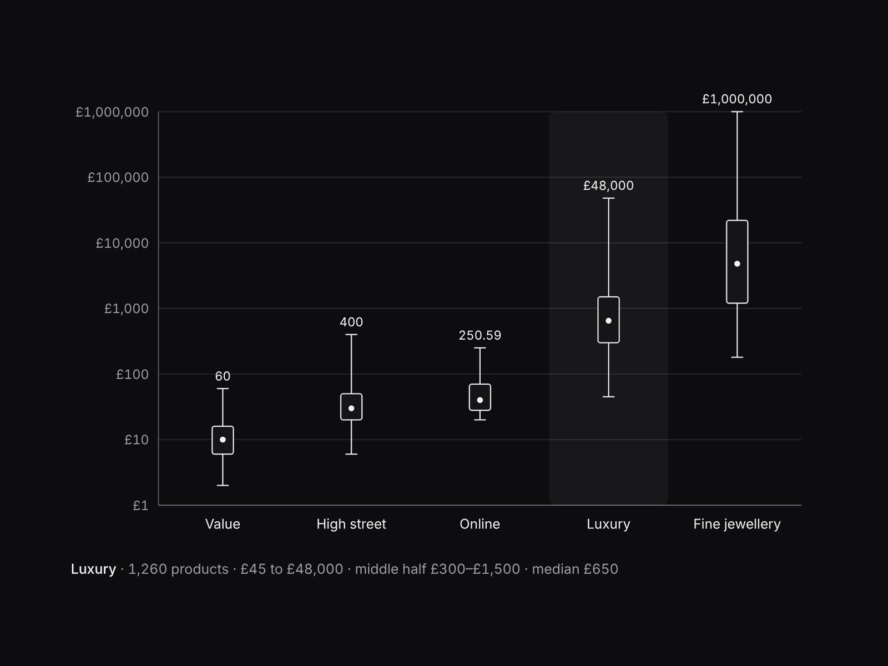
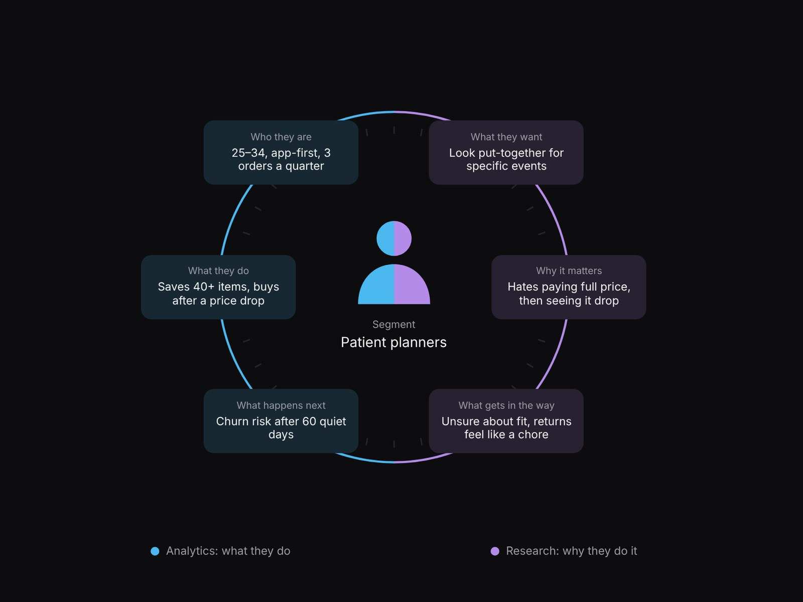

Digital twin · 2026
Pantry
A simulation and digital twin of your grocery cupboard that predicts when things run out.
Beyond the brief
A space for experiments, independent ideas and the things I make simply because I'm curious.

Digital twin · 2026
A simulation and digital twin of your grocery cupboard that predicts when things run out.

Data visualisation · 2017 → today
Designing for big data and machine learning, from logarithmic charts in 2017 to now.
Creative technology · TouchDesigner
One sphere, driven by my hands, by sound and by code.

Research · Advanced analytics
How pairing user research with advanced analytics reveals what neither shows alone.
Digital twin · 2026
A simulation and digital twin of your grocery cupboard that predicts when things run out, so you don’t have to keep track.
Data visualisation · 2017 → today
Designing for big data and machine learning, from logarithmic charts in 2017 to now.
Creative technology · TouchDesigner
One sphere, driven three ways: by my hands, by sound and by code. An exploration of how input becomes something you can see and feel, the same question behind every interface I design.
Research · Advanced analytics
How pairing user research with advanced analytics reveals what neither shows alone.